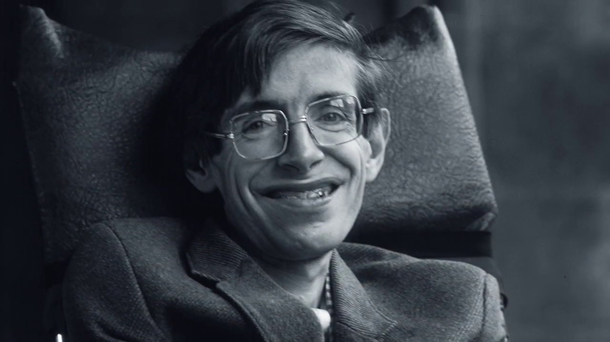

Stephen Hawking

Born on January 8, 1942 in Oxford, Oxfordshire, England, UK. Stephen
Hawking was an English theoretical physicist, cosmologist, author and
Director of Research at the Centre for Theoretical Cosmology within the
University of Cambridge.Birth Name is Stephen William Hawking
Mini bio on him
-
He was born exactly 300 years after the death of Galileo, and then died
on the anniversary of Albert Einstein's birth.
-
He was awarded many honorary degrees and was a Fellow of The Royal
Society and a Member of the US National Academy of Sciences.
-
He occupied the same post, as Lucasian professor of mathematics at
Cambridge University, as was earlier occupied by Sir Isaac Newton.
-
He and his first wife, Jane Wilde, had three children: Robert (b. 1967),
Lucy (b. 1969) and Timothy (b. 1979).
- He had one grandchild.
-
Hawking was a big fan of Marilyn Monroe. His 60th birthday celebration
included an appearance by a Marilyn Monroe impersonator
-
He was not a particularly good student until he started studying science
in school
-
He was widely regarded as one of the world's most brilliant theoretical
physicists
"One, remember to look up at the stars and not down at your feet.
Two, never give up work. Work gives you meaning and purpose and life is
empty without it.
Three, if you are lucky enough to find love, remember it is there and
don't throw it away."
---Stephen Hawking
If you have time,you should read more about this incredible human being
on his
Wikipedia Entry